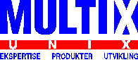

![[Home]](/gifs/on/home.gif)

Multix er en kompetansebedrift for åpne systemer. Vi distibuerer UNIX og Windows programvare som gjør åpne systemer til en realitet. Våre ressurspersoner er spesialister på PC og UNIX integrasjon i lokalnett og Internet. Multix er distributør for ledende programvareleverandører som bl.a. SunSoft og NCD Software. Multix har i dag seks ansatte og har et trivelig og uformelt miljø.
Stillingen inngår i vår teknisk gruppe som har ansvaret for all støtte til våre forhandlere på våre produkter, drift av interne maskiner og våre Internet løsninger. Teknisk gruppe har også ansvaret for evaluering og utprøving av nye produkter samt opplæring av våre forhandlere. Stillingen medfører utstrakt kontakt med våre leverandører.Viktigste arbeidsoppgaver:
Ønskelige kvalifikasjoner:
Vi tilbyr gode betingelser som står i forhold til innsats og resultater Vi foretrekker søkere med erfaring og relevant utdannelse. Det er fordel om du disponerer bil.
Send en kortfattet søknad med utdannelse og erfaring. Vi vil eventuelt be om attester og vitnemål senere.
Søknadsfrist er 15.9.95. Søknaden merket "Systemkonsulent" sendes til:
Multix A/S
Lilleakerveien 31
0283 Oslo
For ytterligere opplysninger, kontakt Andreas Hope på tlf. 22 06 26 06 eller epost hope@multix.no.
![[Opp]](/gifs/on/opp.gif)